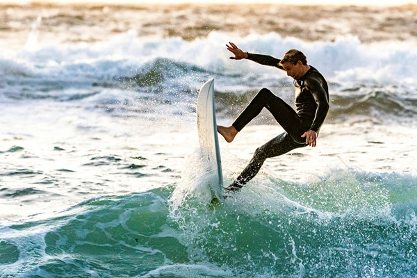

Image
What kind of photos are good to encode using JPEG?
Non-moving photos.
What kind of photos are good to encode using GIF?
short video like photos
What is unique about the PNG format?
a png is able to save image quality the best.
How do you resize your photo to the size it should be displayed?
I used mspaint to resize the image and make it 500 pxs.
Why should you resize photos using photo editing software instead of resizing it using CSS?
if you use CSS you might have it be too high resolution or it can adjsut to something you dont have control over.